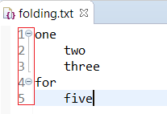
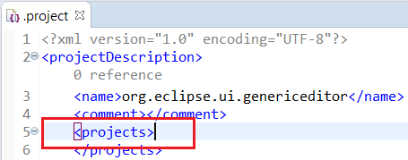
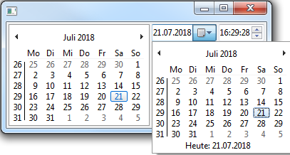
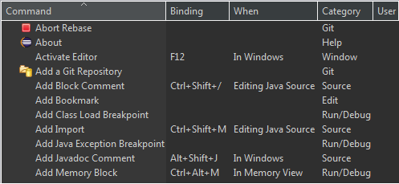

Here are descriptions of some of the changes of interest to plug-in developers made to the Eclipse Platform, SWT and Equinox for the 4.9 release of Eclipse.
New features oriented towards end-users of the platform can be viewed in the What's New section of the Workbench User Guide.
Platform Changes |
|
| Type parameters on Core Databinding classes |
Type parameters have been added to relevant classes and methods in the
org.eclipse.core.databinding bundle. This includes
DataBindingContext, IConverter and IValidator.
This makes code using these classes more explicit and clear and
can help catching bugs in an early stage.
Code example:
IObservableValue<String> o1 = ...;
IObservableValue<Integer> o2 = ...;
DataBindingContext cont = ...;
IConverter<String, Integer> c = IConverter.create(String.class, Integer.class, Integer::decode);
UpdateValueStrategy<String, Integer> s = new UpdateValueStrategy<>();
s.setConverter(c);
cont.bindValue(o1, o2, s, null);
These changes are part of an ongoing effort to make the databinding API more typesafe.
This effort started with the addition of type parameters to the bundles
Note: Users of databinding APIs that are not yet updated to take advantage of the type
parameters will find that the new type parameters cause raw type warnings in their code.
The best way to handle warnings from code that can't be updated is often to suppress these
warnings using |
| Contribute folding to the Generic Editor |
The Generic Editor provides a new extension point org.eclipse.ui.genericeditor.foldingReconcilers to customize folding.
This example shows how LSP4E could contribute folding reconciler only for editor input supporting a language server:
<extension
point="org.eclipse.ui.genericeditor.foldingReconcilers">
<foldingReconciler
class="org.eclipse.lsp4e.operations.folding.FoldingReconciler"
contentType="org.eclipse.core.runtime.text">
<enabledWhen>
<with
variable="editorInput">
<test
property="org.eclipse.lsp4e.hasLanguageServer">
</test>
</with>
</enabledWhen>
</foldingReconciler>
</extension>
When no other folding reconciler is registered for current document,
the generic editor uses a strategy which folds blocks of lines based on whitespaces and indentation:
 |
| Contribute character pair matcher to the Generic Editor |
The Generic Editor provide a new extension point org.eclipse.ui.genericeditor.characterPairMatchers to customize character pair matchers (matching brackets).
The Generic Editor examples shows how to manage matching bracket for tag elements of .project file:
<extension
point="org.eclipse.ui.genericeditor.characterPairMatchers">
<characterPairMatcher
class="org.eclipse.ui.genericeditor.examples.dotproject.TagCharacterPairMatcher"
contentType="org.eclipse.ui.genericeditor.examples.dotproject">
</characterPairMatcher>
</extension>
 |
SWT Changes |
|
| Display week numbers in DateTime calendar |
The  Note: This is a HINT and currently only works on Windows and Linux/GTK. |
| New SWT.ALT_GR constant and support for non-US keyboard layouts |
SWT on GTK3 has added a SWT.ALT_GR constant which can be used to generate special characters requiring the AltGr modifier using
the Display.post(Event) method.
The |
| New event SWT.ZoomChanged added |
A new event type SWT.ZoomChanged has been added to SWT to notify clients that SWT zoom has changed.
Listeners for ZoomChanged event should be added to a Shell. The event's detail field contains the new zoom SWT level.
Note: This operation is a hint and is supported on Windows 10 only. |
| Improved Table and Tree header under dark theme |
SWT on Windows made below improvements into Table and Tree headers, which improves the dark theme visibility.
 |